Step 2: Classical MD simulation of fracture in Si¶
This part of the tutorial requires the initial crack structure crack.xyz
produced in Step 1: Setup of the Silicon model system. If you had problems completing the first part, you
can download it here instead. Start by creating a new
empty script, named run_crack_classical.py.
2.1 Initialisation of the atomic system (20 minutes)¶
Import the relevant modules¶
As before, we import the necessary modules, classes and functions:
import numpy as np
from ase.constraints import FixAtoms
from ase.md.verlet import VelocityVerlet
from ase.md.velocitydistribution import MaxwellBoltzmannDistribution
import ase.units as units
from quippy.atoms import Atoms
from quippy.potential import Potential
from quippy.io import AtomsWriter
from quippy.crack import (get_strain,
get_energy_release_rate,
ConstantStrainRate,
find_crack_tip_stress_field)
Note that the molecular dynamics classes and functions come from
ASE, while the Atoms object, potentials and
crack-specific functionality come from quippy.
Definition of the simulation parameters¶
Let’s define the simulation parameters. The meaning of each parameter is explained in the comments on the right of each line:
input_file = 'crack.xyz' # File from which to read crack slab structure
sim_T = 300.0*units.kB # Simulation temperature
nsteps = 10000 # Total number of timesteps to run for
timestep = 1.0*units.fs # Timestep (NB: time base units are not fs!)
cutoff_skin = 2.0*units.Ang # Amount by which potential cutoff is increased
# for neighbour calculations
tip_move_tol = 10.0 # Distance tip has to move before crack
# is taken to be running
strain_rate = 1e-5*(1/units.fs) # Strain rate
traj_file = 'traj.nc' # Trajectory output file (NetCDF format)
print_interval = 10 # Number of time steps between
# writing output frames
param_file = 'params.xml' # Filename of XML file containing
# potential parameters
mm_init_args = 'IP SW' # Initialisation arguments for
# classical potential
Setup of the atomic structure¶
As a first step, we need to initialise the
Atoms object by loading the atomic structure created
in Step 1: Setup of the Silicon model system from the input_file crack.xyz. Note that the global
fortran_indexing setting should be set to False. Otherwise quippy uses
atom indices in the range 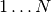, which would not be consistent with
the python indexing used in ASE (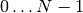).
It is also necessary to read in the original width and height of the slab and
the original crack position, which were saved in crack.xyz at the end
of Step 1:
print 'Loading atoms from file %s' % input_file
atoms = ... # Load atoms from file
orig_height = atoms.info['OrigHeight'] # Initialise original height
orig_crack_pos = atoms.info['CrackPos'].copy() # Initialise original crack position
Note that we make a copy of the CrackPos entry in the
info dictionary, since otherwise
orig_crack_pos would continue to refer to the current crack position
as it is updated during the dynamical simulation.
Setup of the constraints¶
Now we can set constraints on the atomic structure which will be enforced during dynamics. In order to carry out the fracture MD simulation, we need to fix the positions of the top and bottom atomic rows (we call this constraint fix_atoms), and we need to apply a constant strain rate (the strain_atoms constraint).
Let’s start with the fix_atoms constraint, which is exactly the same as the constraint used for relaxing the positions of the crack slab above. In order to do this, we need to find the y coordinate of the top, bottom atomic rows. The x coordinates of the left and right edges of the slab might also be useful later on. This can be easily done as before:
top = ... # Maximum y coordinate
bottom = ... # Minimum y coordinate
left = ... # Minimum x coordinate
right = ... # Maximum x coordinate
Now it is possible to define the fixed_mask array, which is True
for each atom whose position needs to be fixed, and False otherwise,
exactly as before, and to initialise the fix_atoms constraint, in
the same way we did it in Step 1 (i.e., using the
FixAtoms class):
fixed_mask = ... # Define the list of fixed atoms
fix_atoms = ... # Initialise the constraint
print('Fixed %d atoms\n' % fixed_mask.sum()) # Print the number of fixed atoms
To increase 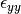 of all atoms at a constant rate (see
the strain_rate and timestep parameters), we
use the ConstantStrainRate class:
strain_atoms = ConstantStrainRate(orig_height, strain_rate*timestep)
You can look at the documentation for the ase.constraints module and the source code for the
ConstantStrainRate class to see how this
works. The adjust_forces() and
adjust_positions() routines are called during the
Verlet update at each MD step. Note that in this case
adjust_positions() simply increases the strain of
all atoms, while adjust_forces() makes no changes
to the forces.
The two constraints just defined need to be attached to our atoms object
(see set_constraint() plus this ASE example of
combining constraints):
atoms. ... # Attach the constraints to atoms
Setup of the potential¶
Before starting the MD simulation, the SW classical potential must be
initialised and attached to the atoms object. As in Step 1, we
use quippy’s Potential class, but now we
need to pass the cutoff_skin parameter, which is used to decide when
the neighbour list needs to be updated (see the attribute
cutoff_skin). Moreover, we request
the potential to compute per-atom stresses whenever we compute forces
using set_default_quantities(), to
save time when locating the crack tip (discussed in more detail
below). The
set_calculator() method should then be used
to set the calculator to the SW potential:
mm_pot = ... # Initialise the SW potential with cutoff_skin
mm_pot.set_default_quantities(['stresses'])
atoms. ... # Set the calculator
2.2 Setup and run the classical MD (20 minutes)¶
Setting initial velocities and constructing the dynamics object¶
There are still a few things that need to be done before running the MD fracture simulation. We will follow the standard ASE molecular dynamics methodology. We will set the initial temperature of the system to 2*sim_T: it will then equilibrate to sim_T, by the Virial theorem:
MaxwellBoltzmannDistribution(atoms, 2.0*sim_T)
A MD simulation in the NVE ensemble, using the Velocity Verlet
algorithm, can be initialised with the ASE
VelocityVerlet class, which requires two
arguments: the atoms and the time step (which should come from the
timestep parameter:
dynamics = ... # Initialise the dynamics
Printing status information¶
Let’s also define a function that prints the relevant information at
each time step of the MD simulation. The information can be saved
inside the info dictionary, so that it
also gets saved to the trajectory file traj_file.
The elapsed simulation time can be obtained with
dynamics.get_time() (note that the time unit in ASE is
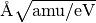, not fs). You
should use the get_kinetic_energy() method to
calculate the temperature (Note: you will need the units.kB
constant, which gives the value of the Boltzmann constant in eV/K),
and the functions get_strain() and
get_energy_release_rate() to return the current
strain energy release rate, respectively.
def printstatus():
if dynamics.nsteps == 1:
print """
State Time/fs Temp/K Strain G/(J/m^2) CrackPos/A D(CrackPos)/A
---------------------------------------------------------------------------------"""
log_format = ('%(label)-4s%(time)12.1f%(temperature)12.6f'+
'%(strain)12.5f%(G)12.4f%(crack_pos_x)12.2f (%(d_crack_pos_x)+5.2f)')
atoms.info['label'] = 'D' # Label for the status line
atoms.info['time'] = ... # Get simulation time
# and convert to fs
atoms.info['temperature'] = ... # Get temperature in K
atoms.info['strain'] = ... # Get strain
atoms.info['G'] = ... # Get energy release rate,
# and convert to J/m^2
crack_pos = ... # Find crack tip as in step 1
atoms.info['crack_pos_x'] = crack_pos[0]
atoms.info['d_crack_pos_x'] = crack_pos[0] - orig_crack_pos[0]
print log_format % atoms.info
This logger can be now attached to the dynamics, so that the information is printed at every time step during the simulations:
dynamics.attach(printstatus)
Checking if the crack has advanced¶
The same can be done to check during the simulation if the crack has advanced, and to stop incrementing the strain if it has:
def check_if_cracked(atoms):
crack_pos = ... # Find crack tip position
# stop straining if crack has advanced more than tip_move_tol
if not atoms.info['is_cracked'] and (crack_pos[0] - orig_crack_pos[0]) > tip_move_tol:
atoms.info['is_cracked'] = True
del atoms.constraints[atoms.constraints.index(strain_atoms)]
The check_if_cracked function can now be attached to the dynamical system, requesting an interval of 1 step (i.e. every time) and passing the atoms object along to the function as an extra argument:
dynamics.attach(check_if_cracked, 1, atoms)
Saving the trajectory¶
Finally, we need to initialise the trajectory file traj_file and to
save frames to the trajectory every traj_interval time steps. This
is done by creating a trajectory object with the
AtomsWriter() function, and then attaching this
trajectory to the dynamics:
trajectory = ... # Initialise the trajectory
dynamics. ... # Attach the trajectory with an interval of
# traj_interval, passing atoms as an extra argument
We will save the trajectory in NetCDF format. This is a binary file format that is similar with the Extended XYZ format we used earlier, with the advantage of being more efficient for large files.
Running the dynamics¶
After all this, a single command will run the MD for nsteps (see the ASE molecular dynamics methodology for more information):
dynamics.run(nsteps)
Milestone 2.2¶
If you have problems you can look at the complete version of the Step 2 solution — run_crack_classical.py script. Leave your classical MD simulation running and move on to the next section of the tutorial.
The first few lines produced by the run_crack_classical.py script should
look something like this:
Loading atoms from file crack.xyz
Fixed 240 atoms
State Time/fs Temp/K Strain G/(J/m^2) CrackPos/A D(CrackPos)/A
---------------------------------------------------------------------------------
D 1.0 560.097755 0.08427 5.0012 -30.61 (-0.00)
D 2.0 550.752265 0.08428 5.0024 -30.61 (-0.00)
D 3.0 535.568949 0.08429 5.0036 -30.61 (-0.00)
D 4.0 515.074874 0.08430 5.0047 -30.61 (-0.00)
D 5.0 489.977973 0.08431 5.0059 -30.61 (-0.00)
D 6.0 461.140488 0.08432 5.0071 -30.61 (-0.00)
D 7.0 429.546498 0.08433 5.0083 -30.61 (-0.00)
D 8.0 396.264666 0.08434 5.0095 -30.61 (-0.01)
D 9.0 362.407525 0.08435 5.0107 -30.61 (-0.01)
D 10.0 329.088872 0.08436 5.0119 -30.61 (-0.01)
Here we see the current time, temperature, strain, energy release rate G, the
x coordinate of the crack position, and the change in the crack position since
the beginning of the simulation. In the early stages of the calculation, the
strain and G are both increasing, and the temperature is rapidly falling
towards sim_T = 300 as anticipated.
2.3 Visualisation and Analysis (as time permits)¶
Start another ipython session is a new terminal with plotting support enabled, using the shell command:
ipython --pylab
This will allow you to look at the progress of your classical fracture simulation while it continues to run. All the example code given in this section should be entered directly at the ipython prompt.
The first step is to import everything from quippy using the
qlab interactive module, then open your trajectory using the
view() function:
from qlab import *
set_fortran_indexing(False)
view("traj.nc")
As we saw earlier, this will open an AtomEye viewer
window containing a visual representation of your crack system (as before
fortran_indexing=False is used to number the atoms starting from zero). You
can use the Insert and Delete keys to move forwards or backwards through the
trajectory, or Ctrl+Insert and Ctrl+Delete to jump to the first or last
frame – note that the focus must be on the AtomEye viewer window when you use
any keyboard shortcuts. The current frame number is shown in the title bar of
the window.
The function gcat() (short for “get current atoms”) returns a
reference to the Atoms object currently being visualised (i.e. to the
current frame from the trajectory file). Similarly, the gcv()
function returns a reference to the entire trajectory currently being viewed as
an AtomsReaderViewer object.
You can change the frame increment rate by setting
the delta attribute of the viewer, e.g. to
advance by ten frames at a time:
set_delta(10)
Or, to jump directly to frame 100:
set_frame(100)
You can repeat the view("traj.nc")
command as your simulation progresses to reload the file (you can use Ctrl+R
in the ipython console to search backwards in the session history to save
typing).
Stress field analysis¶
To compute and display the instantaneous principal per-atom stress 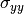 as computed by the SW potential for a configuration near the beginning of your dynamical simulation:
mm_pot = Potential('IP SW', param_filename='params.xml')
at = gcat()
at.set_calculator(mm_pot)
mm_sigma = at.get_stresses()
sigma_yy = mm_sigma[:,1,1]
aux_property_coloring(sigma_yy)
The mm_sigma array has shape (len(atoms), 3, 3), i.e. it is
made up of a  stress tensor 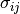 for
each atom. The sigma_yy array is the
stress tensor 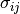 for
each atom. The sigma_yy array is the [1, 1] component of each of
these arrays, i.e. . To read off the value of the
stress on a particular atom, just right click on it. As before, this
prints various information in the ipython console. The _show
property corresponds to the values currently being used to colour the
atoms. You will see that is very strongly peaked
near the crack tip. If you prefer to see the values in GPa, you could
do
aux_property_coloring(sigma_yy/units.GPa)

The concept of per-atom stresses is a little arbitrary. The values we are plotting here were obtained from partitioning the total virial stress tensor, which is given by
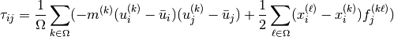
where  and
and  are atom indices, 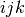 are Cartesian
indicies,
are atom indices, 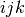 are Cartesian
indicies,  is the cell volume, 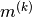,
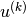, 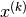 and 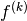 are respectively the
mass, velocity, position of atom and 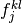 is
the
is the cell volume, 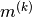,
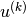, 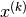 and 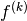 are respectively the
mass, velocity, position of atom and 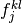 is
the  th component of the force between atoms and
. The first term is a kinetic contribution which vanishes at
near zero temperature, and it is common to use the second term to
define a per-atom stress tensor.
th component of the force between atoms and
. The first term is a kinetic contribution which vanishes at
near zero temperature, and it is common to use the second term to
define a per-atom stress tensor.
Note, however, that this requires a definition of the atomic volume. By default
the get_stresses() function simply divides the
total cell volume by the number of atoms to get the volume per atom. This is
not a very good approximation for our cell, which contains a lot of empty
vacuum, so the volume per atom comes out much too large, and the stress
components much too small, e.g. the peak stress, which you can print in units of
GPa with:
print mm_sigma.max()/units.GPa
is around 4 GPa. Values of stress in better agreement with linear elastic theory can be obtained by assuming all atoms occupy the same volume as they would in the equilibrium bulk structure:
mm_pot.set(vol_per_atom=si_bulk.get_volume()/len(si_bulk))
mm_sigma = at.get_stresses()
print mm_sigma.max()/units.GPa
gives a value of around 25 GPa. As this is only a simple rescaling, the unscaled virial stress values are perfectly adequate for locating the crack tip.
Use values from the sigma_yy array to plot the virial
stress along the line 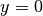 ahead of the crack tip, and verify the stress
obeys the expected 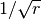 divergence near the crack tip, and tends
to a constant value ahead of the crack, due to the thin strip loading. Hint:
use a mask to select the relevant atoms, as we did when fixing the edge atoms
above. You can use the matplotlib plot() function to
produce a plot.
Time-averaged stress field¶
By now, you should have a few picoseconds of dynamics in your trajectory file.
Reload with view("traj.nc") to see what is happening. You can jump to the
end with Ctrl+Delete, or by typing last() into the ipython console. Here
is what the instantaneous looks like after 5 ps of dynamics:

As you can see, the stress field is rather noisy because of
contributions made by the random thermal motion of atoms. The
find_crack_tip_stress_field() uses an exponential
moving average of the stress field when finding the tip. This average
is stored in the avg_sigma array entry inside the Atoms object, which is saved
with each frame in the trajectory. For techical reasons this is stored
as a reshaped array of shape (len(atoms), 9) rather than
(len(atoms), 3, 3) array, so you can find the 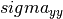
components in the 5th column (counting from zero as usual in Python),
i.e.
aux_property_coloring(gcat().arrays['avg_sigma'][:, 4])
You should find that the crack tip is more well defined in the average stress:

Geometry and coordination analysis¶
Press k to colour the atoms by coordination. This is based on the
nneightol attribute of the Atoms object, which we set
to a value of 1.3 in the make_crack.py script. This factor acts as
a multipler for the covalent radii of the atomic species, taken from
the quippy.periodictable.ElementCovRad array. You can check
the maximum Si–Si bond-length this corresponds to with:
print 1.3*2*ElementCovRad[14]
Note that 14 is the atomic number of silicon. After the simulation has run
for a little while, you should be able to see both under-coordinated (green) and
over-coordinated (red) atoms near the crack tip.
Here is a typical snapshot at the end of 10 ps of dynamics. Note the large number of defects, indicating that the fracture surface is not atomically smooth as we find it to be in experiments. In your simulation you may be able to spot signs of energy dissipation mechanisms, such as dislocation emission from the crack tip.

Rendering a movie of the simulation¶
If you would like to make a movie of your simulation, you can use
the render_movie() function. Arrange the AtomEye window so that the
crack is on the left hand side of the window at the beginning of the simulation
and near the right hand side at the end, then run the command:
render_movie('movie.mp4')
This function renders each frame to a .jpg file, before combining the
snapshots with the ffmpeg tool to make a movie like
this one:
The example movie above makes the ductile nature of the fracture propagation much clearer. We see local amorphisation, the formation of strange sp2 tendrils, and temporary crack arrest. Comparing again with the experimental TEM images makes it clear that, as a description of fracture in real silicon, the SW potential falls some way short.
Position of the crack tip¶
The find_crack_tip_stress_field() function works by
fitting per-atom stresses calculated with the SW potential (the
concept of per-atom stresses will be discussed in more detail below)
in the region near the crack tip to the Irwin solution for a singular
crack tip under Mode I loading, which is of the form
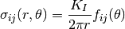
where 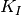 is the Mode I stress intensity factor, and the angular dependence is given by the set of universal functions 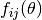.
You can verify this by comparing the position detected by
find_crack_tip_stress_field(), stored in the
crack_pos attribute, with the positions of atoms that visually look
to be near the tip — right click on atoms in the AtomEye
viewer window to print information about them, including their
positions.
Compare the automatically detected crack position (printed as the
crack_pos_x parameter when you change frames in the AtomEye viewer,
or available via gcat().info['crack_pos_x']) with what a visual
inspection of the crack system would tell you. Do you think it’s
accurate enough to use as the basis for selecting a region around the
crack tip to be treated at the QM level?
Evolution of energy release rate and crack position¶
For NetCDF trajectories,
the AtomsReaderViewer.reader.netcdf_file attribute of the current
viewer object gcv() provides direct access to the underlying NetCDF
file using the Python netCDF4 module:
traj = gcv()
dataset = traj.reader.netcdf_file
You can list the variables stored in dataset with:
print dataset.variables.keys()
To plot the energy release rate G as a function of simulation time, you could do:
plot(dataset.variables['time'], dataset.variables['G'])
You should see that the energy release rate increases at a roughly constant rate before stopping at constant value when the crack starts to move (the increase is not linear since is is actually the strain that we increment at a constant rate).
The following plot shows the evolution of G (blue) and of the
position of the crack (red; stored as crack_pos_x). Note that a
second vertical axis can be produced with the
twinx() function.
{kind=link}
In this case the crack actually arrests for a while at around 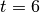 ps. This is another characteristic feature of non-brittle fracture, indicating that our simulation is failing to match well with experiment. According to Griffith’s criterion, fracture should initiate at 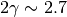 J/m2, whereas we don’t see any motion of the crack tip until 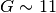 J/m2. How much of this difference do you think is due to the high strain rate and small system used here, and how much to the choice of interatomic potential? How would you check this?
Temperature and velocity analysis¶
Using the method above, plot the evolution of the temperature during your simulation. Here is another example plot, with the temperature shown in blue and the crack position in red.

You will see that lots of heat is produced once the crack starts to move, indicating that the system is far from equilibrium. This is another sign that our system is rather small and our strain rate is rather high. How could this be addressed? Do you think an NVT simulation would be more realistic? What problems could adding a thermostat introduce?
If you have time, you could compare how well the atomic velocities match the expected Maxwell-Boltzmann distribution of atomic velocities, given by
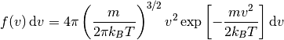
Here’s a Python function which implements this formula:
def max_bolt(m,T,v):
"Maxwell-Boltmann distribution of speeds at temperature T for particles of mass m"
return 4*pi*(m/(2*pi*units.kB*T))**(3.0/2.0)*(v**2)*exp(-m*v**2/(2*units.kB*T))
We can average the atomic speeds in the last 50 frames in our trajectory and use the speeds data to produce a histogram:
m = traj[-1].get_masses()[0] # Mass of a Si atom
T = traj[-1].info['temperature'] # Temperature at end of simulation
v = traj.reader.netcdf_file.variables['momenta'][-50:,:,:]/m # Get velocities
s = sqrt((v**2).sum(axis=2)) # Speeds are magnitude of velocities
hist(s.reshape(-1), 20, normed=True, alpha=0.5) # Draw a histogram
ss = linspace(0., s.max(), 100) # Compare with Maxwell-Boltzmann distrib
plot(ss, max_bolt(m,T,ss), lw=2)

Atom-resolved strain tensor¶
The virial stress expression above is only valid when averaged over time and space, so this method of calculating per-atom stresses can lead to unphysical oscillations [Zimmerman2004]. One alternative is the atom-resolved strain tensor, which allows the strain, and hence stress, fields to be evaluated at the atomistic scale facilitating direct comparisons with elasticity theory results [Moras2010].
A definition of the atom-resolved strain tensor can be obtained for
all the four-fold coordinated atoms in the tetrahedral structure (all
other atoms are assigned zero strain) by comparing the atomic
positions with the unstrained crystal. The neighbours of each atom are
used to define a local set of cubic axes, and the deformations along
each of these axes are combined into a matrix  describing the
local deformation:
describing the
local deformation:
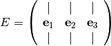
where, for example  is the relative deformation
along the first cubic axis. To compute the local strain of the atom,
we need to separate this deformation into a contribution due to
rotation and one due to strain. This can be done by finding the polar
decomposition of , by writing in the form 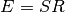 with
is the relative deformation
along the first cubic axis. To compute the local strain of the atom,
we need to separate this deformation into a contribution due to
rotation and one due to strain. This can be done by finding the polar
decomposition of , by writing in the form 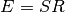 with  a pure rotation and
a pure rotation and  a symmetric matrix.
a symmetric matrix.
Diagonalising the product 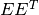 allows and
to be calculated. The strain components 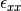,
, 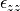, 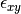,
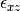 and 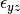 can then be calculated
by rotating to align the local cubic axes with the Cartesian
axes:
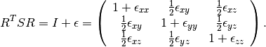
Finally if we assume linear elasticity applies, the atomistic stress
can be computed simply as 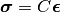 where
 is the
is the  matrix of elastic constants.
matrix of elastic constants.
The AtomResolvedStressField class
implements this approach. To use it to calculate the stress in your
crack_slab Atoms object, you can use the following code:
arsf = AtomResolvedStressField(bulk=si_bulk)
crack_slab.set_calculator(arsf)
ar_stress = crack_slab.get_stresses()
Colour your atoms by the component of the
atom-resolved stress field, and compare with the local virial stress
results. Add the atom resolved values along
 to your plot. Do you notice any significant differences?
Repeat the minimisation of the crack slab with a lower value of
relax_fmax (e.g. 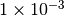 eV/A). Do the stress
components computed using the two methods change much?
to your plot. Do you notice any significant differences?
Repeat the minimisation of the crack slab with a lower value of
relax_fmax (e.g. 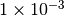 eV/A). Do the stress
components computed using the two methods change much?
When you are ready, proceed to Step 3: LOTF hybrid MD simulation of fracture in Si.